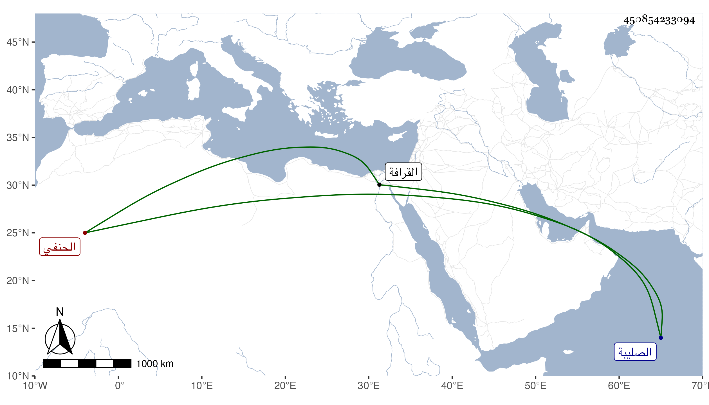

0902Sakhawi.DawLamic.ITO20230111-ara1.EIS1600.450854233094
Biography ID: 450854233094
506
عزيزة ابنة الزين قاسم بن قطلوبغا الحنفي زوج المحب محمد بن يونس أخى السيف الحنفي وأم أولاده واخت المحمدين الماضيين . ماتت في يوم الثلاثاء ثالث عشر المحرم سنة تسع وثمانين بالبيت المعروف بعم زوجها من نواحي الصليبة وصلى عليها من الغد في سبيل المؤمنى في طائفة ثم دفنت عند أبيها بسيدى عقبة من القرافة . ومولدها سنة خمس وأربعين وثمانمائة وتعلمت الخط وقرأت ما تيسر وسمعت على جدة زوجها أم هانئ الهورينية وغيرها وكانت خيرة أثكلت عدة أولاد بل غرق لها ولد قبيل موتها بيسير في بركتهم فكظمت ولم تبث عوضهما الله الجنة .
